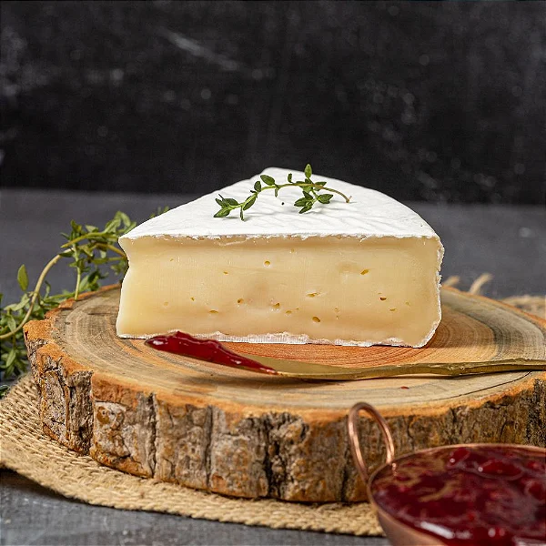

O Brie é um queijo macio originário da França, conhecido por sua textura cremosa e sabor suave. Sua casca branca aveludada é comestível e adiciona um contraste agradável à sua suavidade interior.
O sabor do queijo Brie pode variar de suave a ligeiramente amanteigado, dependendo de sua maturação. Ele é frequentemente servido em tábuas de queijos, acompanhado de frutas, nozes ou geleias.
Seu processo de fabricação envolve a coagulação do leite, formação da coalhada, drenagem, salga e maturação em condições controladas para desenvolver seu sabor e textura característicos.
Experimente o Brie em receitas que valorizem sua cremosidade e delicadeza, ou simplesmente aprecie-o puro acompanhado de um bom vinho.